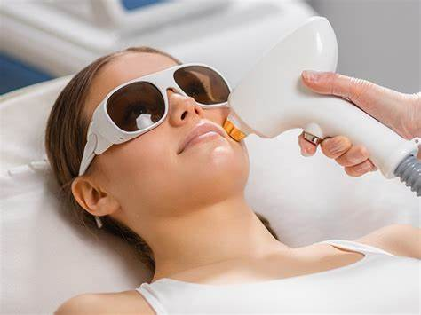
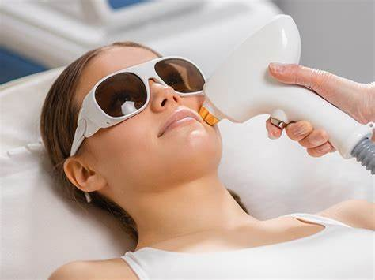
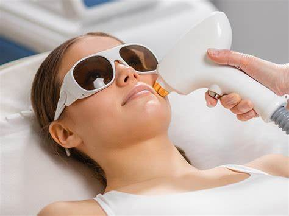
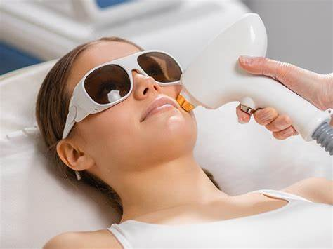

Epilarea definitivă este o metodă modernă de îndepărtare a părului nedorit folosind tehnologia laser sau IPL (lumină intens pulsată). Această procedură distruge foliculii de păr, împiedicând astfel creșterea acestora pe termen lung.
Epilarea definitivă este ideală pentru persoanele care doresc să elimine părul nedorit din diferite zone ale corpului, cum ar fi fața, axilele, picioarele, sau zona inghinală. Este potrivită pentru majoritatea tipurilor de piele și păr.
Primele rezultate devin vizibile după 2-3 ședințe, cu o reducere semnificativă a părului în zona tratată. După un ciclu complet de tratament, părul va fi aproape complet eliminat, iar rezultatele sunt de lungă durată.
Se recomandă un ciclu de 6-8 ședințe, efectuate la un interval de 4-6 săptămâni, pentru a obține rezultate optime. În funcție de tipul de piele și păr, poate fi necesară o ședință de întreținere anuală.
Epilarea definitivă nu este recomandată persoanelor cu piele foarte închisă la culoare, celor care au sensibilitate la lumină sau afecțiuni ale pielii. Consultați un specialist pentru a verifica dacă acest tratament este potrivit pentru dumneavoastră.
Pentru programări, vă rugăm să ne contactați la telefon: +40 123 456 789 sau prin email: contact@bodyfusion.ro.